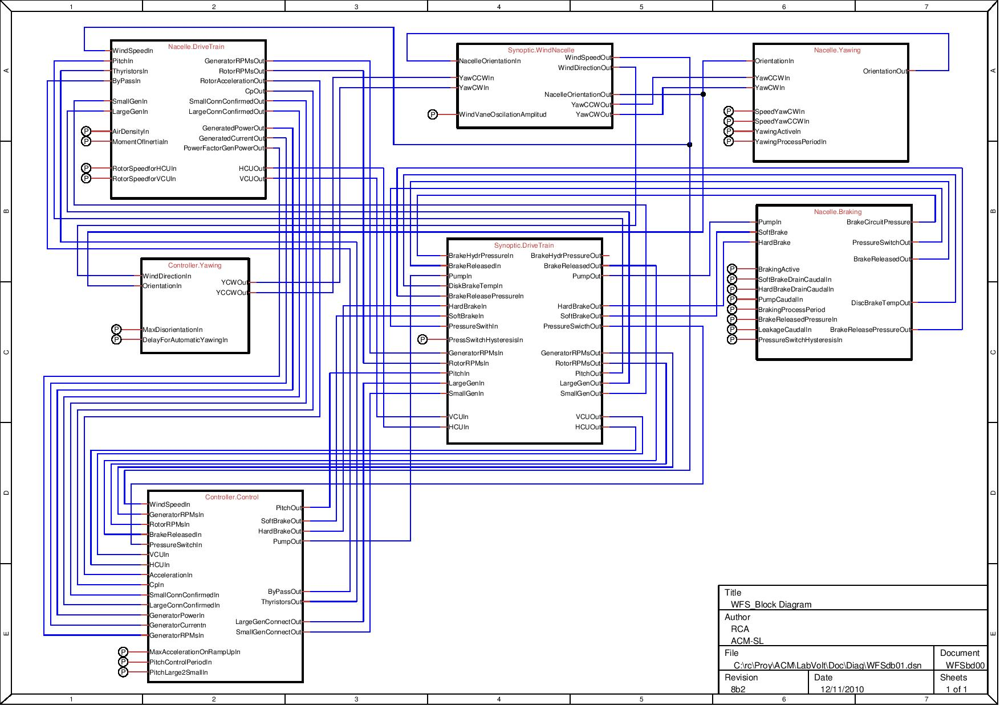

La figura seguente mostra il diagramma elettrico virtuale delle connessioni tra i diversi sottosistemi del simulatore, secondo la configurazione in "DSASWTSpanish.conf."
I cerchi con un "P" fare riferimento a "Parametri."

NOTA IMPORTANTE: Questo diagramma corrisponde alla configurazione iniziale del simulatore, progettato per il corretto funzionamento. Qualsiasi modifica delle interconnessioni effettuate nel file di configurazione modifica questo diagramma.